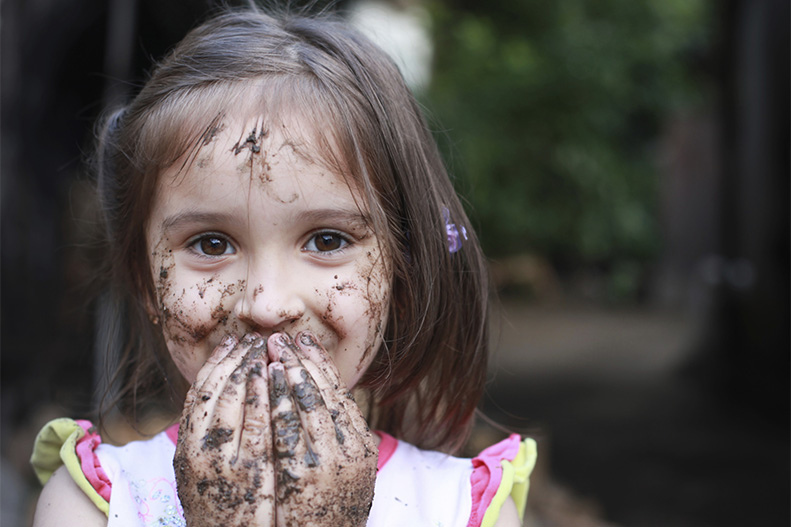
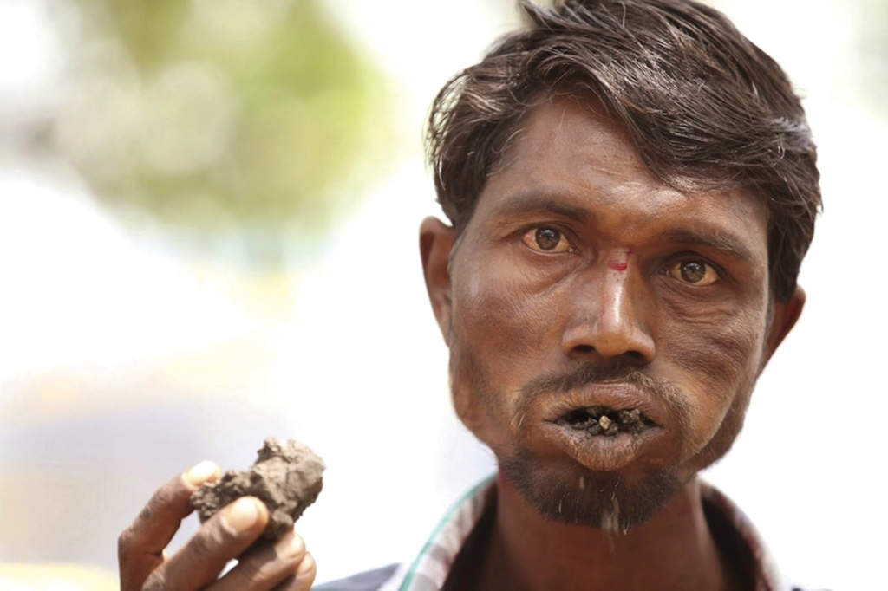

PICA
Es un trastorno que consiste en ingerir sustancias no nutritivas como, por ejemplo, arena o yeso. Es más habitual durante la infancia, y en algunos casos se presenta en niños que tienen autismo o un retraso mental.
Algunos criterios para diagnosticar PICA son los siguientes:
La ingestión persistente de sustancias no nutritivas durante un periodo de al menos 1 mes.
La ingestión de sustancias no nutritivas es inadecuada para el nivel de desarrollo.
La conducta de la ingesta no forma parte de prácticas sancionadas culturalmente.
Si la conducta de la ingesta aparece exclusivamente en el transcurso de otro trastorno mental (por ejemplo, retraso mental, trastorno generalizado del desarrollo, esquizofrenia) es de suficiente gravedad como para merecer atención clínica independiente.

La PICA es un trastorno de la ingestión y de la conducta alimentaria de la infancia o la niñez. Se define como el consumo persistente de sustancias no nutritivas durante un período de por lo menos un mes, de forma inadecuada evolutivamente y siempre que su práctica no esté sancionada culturalmente.
Muchas especies animales, incluidos primates, presentan este comportamiento. Documentado desde la antigüedad, en la mayor parte de los casos, se ha considerado más como síntoma de otro trastorno o estado que como entidad independiente.
No se conoce la prevalencia. Se describe sobre todo en discapacitados intelectuales, embarazadas, autistas, enfermos mentales, niños y otros. Se ha observado ingesta de tierra, hielo, almidón, cuerdas, madera, y otros productos, incluyendo algunos autores en este contexto el consumo obsesivo y reiterado de sustancias comestibles. La geofagia como fenómeno cultural, aunque a veces ocasiona enfermedad, es considerada como una forma de paleomedicina o paleonutrición. Se desconoce la causa de la Pica como trastorno y no existen marcadores de la misma. Factores sensoriales, digestivos, nutricionales, psicológicos y psiquiátricos se han implicado en su origen y mantenimiento. Aunque la morbi-mortalidad es desconocida y difícil de estudiar, destacan las intoxicaciones, parasitosis y el abdomen quirúrgico como complicaciones graves. Por último, al igual que el resto de los trastornos de la alimentación, el manejo global de esta entidad requiere la intervención coordinada de diversos profesionales de la salud.
Algo que debes saber sobre la PICA:
1. Por lo general, lo que comen las personas con pica no les hace daño, pero, a veces, les causa complicaciones, como obstrucciones en el tubo digestivo o envenenamiento por plomo.
Los médicos suelen diagnosticar pica cuando una persona de más de 2 años de edad ha estado comiendo cosas que no son alimentos durante 1 mes o más.
3. Las técnicas de modificación conductual pueden ser beneficiosas pero se sabe poco acerca de los tratamientos específicos para la pica.
4. Se tratan las carencias nutricionales y otras complicaciones según sea necesario.
Ojo esto no quiere decir que aunque no les haga daño lo que comen las personas con PICA, significa que pueden seguir comiendo todo lo que quieran, las complicaciones a largo plazo pueden ser mortíferas
Diagnóstico de la PICA

El médico, por lo general, diagnostica la pica mediante la determinación de lo que la persona ha estado comiendo. La pica se diagnostica cuando la persona come repetidamente cosas que no son alimentos durante 1 mes o más. El trastorno no se diagnostica en niños menores de 2 años, ya que a esa edad el hecho de comer ese tipo de materiales no se considera anormal. Tampoco se diagnostica cuando forma parte de la cultura de la persona. Si los médicos sospechan la presencia del trastorno, valoran el estado nutricional para comprobar si hay pérdida de peso y deficiencias nutricionales.
A veces la pica se diagnostica cuando la persona afectada presenta síntomas de obstrucción del tubo digestivo (como calambres intensos o estreñimiento) o envenenamiento por plomo y se le lleva a la unidad de emergencias para que le vea un médico. Puede realizarse una exploración radiológica para detectar bloqueos en el tubo digestivo. Los médicos pueden pedir análisis de sangre para verificar si hay intoxicación por plomo o análisis de heces para buscar una infección parasitaria.
Tratamiento de la PICA
El tratamiento de la PICA se lleva a cabo de las siguientes maneras:
En ocasiones modificación conductual
Tratamiento de los déficits nutricionales y otras complicaciones
1. Las técnicas de modificación conductual pueden ser beneficiosas pero se sabe poco acerca de los tratamientos específicos para este trastorno. Las técnicas de modificación conductual ayudan al paciente a desaprender conductas no deseables en tanto que aprende otras que sí lo son.
2. Se tratan las carencias nutricionales y otras complicaciones según sea necesario. Los bloqueos en el tubo digestivo pueden requerir cirugía.
3. La pica puede durar varios meses y después desaparece por sí solo, sobre todo en los niños.
Causas de la PICA
La pica se observa más en niños pequeños que en adultos. Hasta un tercio de los niños de 1 a 6 años tienen estas conductas alimentarias. No está claro cuántos niños con pica consumen tierra (geofagia) intencionalmente.
La pica también se puede presentar durante el embarazo. En algunos casos, la falta de ciertos nutrientes, como hierro y zinc, puede desencadenar este deseo vehemente inusual. La pica también puede presentarse en adultos que ansían sentir una cierta textura en la boca.
Síntomas
Los niños y los adultos con pica pueden comer:
Heces de animales
Barro
Tierra
Bolas de pelo
Hielo
Pintura
Arena
Este patrón de comer debe durar al menos 1 mes para encajar dentro del diagnóstico de la pica. Dependiendo de lo que se esté comiendo y cuánto, pueden presentarse síntomas de otros problemas, tales como:
Dolor de estómago, náuseas y distensión abdominal causada por obstrucción en el estómago o intestino
Fatiga, problemas de conducta, problemas en la escuela y otros hallazgos de envenenamiento por plomo o mala nutrición
Pruebas y exámenes
No existe un examen único para la pica. Debido a que la pica puede ocurrir en personas que tienen mala nutrición, el proveedor de atención médica puede examinar los niveles de hierro y zinc en la sangre. También se pueden hacer exámenes de sangre para comprobar si hay anemia. Siempre se deben verificar los niveles de plomo en los niños que pueden haber ingerido pintura u objetos cubiertos de polvo de pintura a base de plomo para ver si hay intoxicación por plomo. El proveedor también debe hacer pruebas para infección si la persona ha estado comiendo tierra o desechos animales contaminados.
Posibles complicaciones
Las complicaciones incluyen:
Bezoar (una masa de material indigerible atrapada dentro del cuerpo, por lo regular en el estómago)
Infección